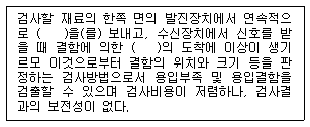
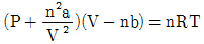

가스기능장 (2013-07-21 기출문제)
1과목: 임의 구분
1. 다음은 비파괴검사에 대한 내용이다. ( )안에 들어갈 내용으로 가장 알맞은 것은?

- X-선
- τ
- 초음파
- 형광
(정답률: 92%)

2. 고압가스사업자는 안전관리규정을 언제 허가관청, 신고관청 또는 등록관청에 제출하여야 하는가?
- 완성 검사시
- 정기검사 시
- 허가신청 시
- 사업개시 시
(정답률: 93%)
3. 고압식 공기액화분리장치에 대한 설명으로 옳은 것은?
- 원료공기는 압축기에 흡입되어 150~200atm으로 압축된다.
- 탈습된 원료공기는 전부 팽창기로 이송되어 하부탑에서 압력이 5atm으로 단열팽창되어 -50도의 저온이 된다.
- 상부탑에는 다수의 정류판이 있어서 약 5atm의 압력으로 정류된다.
- 하부탑에서는 약 0.5atm의 압력으로 정류된다.
(정답률: 75%)
4. 수소 제조의 석유분해법에서 수증기 개질법의 원료로 가장 적당한 것은?
- 원유
- 중유
- 경유
- 나프타
(정답률: 92%)
5. 암모니아 1톤을 내용적 50L의 용기에 충전하고자 한다. 필요한 용기는 몇 개인가? (단, 암모니아의 충전정수는 1.86이다.)
- 11
- 38
- 47
- 20
(정답률: 85%)
6. 공기액화 분리장치의 폭발 원인으로 가장 거리가 먼 것은?
- 액체 공기 중의 오존의 흡입
- 공기 취입구에서 사염화탄소의 흡입
- 압축기용 윤활유의 분해에 의한 탄화수소의 생성
- 공기 중에 있는 산화질소, 과산화질소 등 질화물의 흡입
(정답률: 80%)
7. 부탄용 가스설비에 부착되어 있는 안전밸브의 설정압력은 몇 MPa 이하로 하여야 하는가?
- 1.8
- 2.0
- 2.2
- 2.5
(정답률: 76%)
8. 폴리트로픽 지수의 크기가 비열비의 크기와 동일할 때의 변화를 무슨 변화라고 하는가?
- 등적변화
- 단열변화
- 등온변화
- 등압변화
(정답률: 58%)
9. 다음 각 가스의 제조에 대한 설명으로 틀린 것은?
- 암모니아(ammonia)는 산소와 수소로 제조한다.
- 아세틸렌은 탄화칼슘을 물에 반응시켜 제조한다.
- 산소는 공기를 액화 분리하여 제조한다.
- 수소는 석유를 분해하여 제조한다.
(정답률: 90%)
10. 안전관리자의 직무범위가 아닌 것은?
- 사업소 또는 사용 신고시설의 종사자에 대한 안전관리를 위하여 필요한 지위,감독
- 공급자의 의무이행 확인
- 용기 등의 제조공정 관리
- 용기기기, 기구의 입출고 관리
(정답률: 84%)
11. 도시가스가 누출될 경우 조기에 발견하여 중독과 폭발을 방지하여고 공급가스를 부취시킨다. 이 때 부취제의 성질과 무관한 것은?
- 독성이 없을 것
- 낮은 농도에서도 냄새가 확일될 것
- 완전연소 후에 냄새를 남길 것
- 화학적으로 안전될 것
(정답률: 94%)
12. 어떤 냉동기에서 0℃ 의 물을 2ton을 만드는데 50kwh의 일이 소요되었다면 이 냉동기의 성적계수는? (단, 물의 융해잠열은 80kcal/kg이다.)
- 2.32
- 2.67
- 3.72
- 1⑤
(정답률: 61%)
13. 긴급이송설비에 부속된 처리설비는 이송되는 설비 안의 내용물을 다음 중 한가지 방법으로 처리할 수 있어야 한다. 이에 대한 설명으로 틀린 것은?
- 플레어스텍에서 안전하게 연소시킨다.
- 벤트스텍에서 안전하게 방출시킨다.
- 액화가스는 용기로 이송한 후 소분시킨다.
- 독성가스는 제독 조치 후 안전하게 폐기시킨다.
(정답률: 91%)
14. 이상기체(perfect gas)의 열역학적 성질 중 온도에 따라서만 변화하는 것이 아닌 것은?
- 내부에너지
- 엔탈피
- 엔트로피
- 비열
(정답률: 71%)
15. 액화석유가스의 사용시설에 대한 설명으로 틀린 것은?
- 밸브 또는 배관을 가열하는 때에는 열습포나 40℃ 이하의 더운 물을 사용할 것
- 용접작업 중인 장소로부터 5m 이내에서는 불꽃을 발생시킬 우려가 있는 행위를 금할 것
- 내용적 20L 이상의 충전용기를 옥외로 이동하면서 사용할 때에는 용기운반전용 장비에 견고하게 묶어서 사용 할 것
- 사이폰 용기는 보온장치가 설치되어 있는 시설에서만 사용할 것
(정답률: 74%)
16. L·atm 과 단위가 같은 것은?
- 힘
- 에너지
- 동력
- 밀도
(정답률: 88%)
17. 안전관리자는 해당분야의 상위 자격자로 할 수 있다. 다음 중 가장 상위인 자격은?
- 가스기능사
- 가스기사
- 가스산업기사
- 가스기능장
(정답률: 97%)
18. 왕복동식 압축기에서 흡입온도의 상승원인이 아닌 것은?
- 전단의 쿨러 과냉
- 관로에 수열이 있을 경우
- 전단 냉각기의 능력 저하
- 흡입밸브 불량에 의한 역화
(정답률: 87%)
19. 열선형 흡인식 가스 검지기로 LP가스의 누출을 검사하였더니 L.E.L(Limit Explosion Low) 검지 농도가 0.03% 를 가리켰다. 이 가스 검지기의 공기 흡입량이 1초에 4cm3 이라면 이 때의 가스 누출량 (cm3/s) 은?
- 1.2×10-3
- 2×10-3
- 2.4×10-3
- 5×10-3
(정답률: 59%)
20. 냉동용 압축기를 분해, 수리할 때 주의사항에 대한 설명으로 틀린 것은?
- 부품을 분해랄 때에는 흠이 나지 않도록 다룰 것
- 볼트의 조음 토크는 취급설명서에 지시된 값에 준할 것
- 조임 볼트는 사용부분을 변경하지 않도록 할 것
- 패킹을 붙일 때에는 우선 모든 기계 가공면에 광명단을 바른 다음에 패킹을 올려 놓을 것
(정답률: 97%)
2과목: 임의 구분
21. 도시가스배관의 이음부(용접이음매제외)와 절연전선과는 얼마 이상 떨어져야 하는가?
- 30cm
- 20cm
- 15cm
- 10cm
(정답률: 61%)
22. 고압차단 스위치에 대한 설명으로 맞는 것은?
- 작동압력은 정상고압보다 10kgf/cm2 정도 높다.
- 전자밸브와 조합하여 고속다기통 압축기의 용량제어용으로 주로 이용된다.
- 압축기 1대마다 설치시에는 토출 스톱밸브 후단에 설치 한다.
- 작동 후 복귀 상태에 따라 자동복귀형과 수동복귀형이 있다.
(정답률: 77%)
23. 폭굉이 전하는 연소속도를 폭속(폭굉속도)라 하는데 폭굉파의 속도(m/s)는 약 얼마인가?
- 0.03 ~ 10
- 20 ~ 100
- 150 ~ 200
- 1000 ~ 3500
(정답률: 93%)
24. 상용압력 5MPa로 사용하는 내경 65cm의 용접제 원통형 고압가스 동판의 두께는 최소한 얼마가 필요한가? (단, 재료는 인장강도 600N/mm2 의 강을 사용하고, 용접효율은 0.75, 부식여유는 2㎜로 한다.)
- 11㎜
- 14㎜
- 17㎜
- 20㎜
(정답률: 62%)
25. 특정고압가스에 대한 설명으로 옳은 것은?
- 특정고압가스를 사용하고자 하는 자는 산업통상자원부령이 정하는 기준에 맞도록 사용시설을 갖추어야 한다.
- 특정고압가스를 사용하고자 하는 자는 대통령령이 정하는 바에 의하여 미리 도지사에게 신고하여야 한다.
- 특정고압가스 사용신고를 받은 도지사는 그 신고를 받은 날로부터 10일 내에 관할 소방서장에게 그 신고 사항을 통보하여야 한다.
- 수소, 산소, 염소, 포스겐, 시안화수소 등이 특정고압가스이다.
(정답률: 84%)
26. 10kw 는 약 몇 HP 인가?(오류 신고가 접수된 문제입니다. 반드시 정답과 해설을 확인하시기 바랍니다.)
- 51.3
- 134
- 225
- 316
(정답률: 81%)
27. 강(鋼)의 부식 특성에 대한 설명으로 틀린 것은?(오류 신고가 접수된 문제입니다. 반드시 정답과 해설을 확인하시기 바랍니다.)
- 강 부식의 양극반응은 Fe → FE2+ + 2e-
- 양극반응은 대부분의 부식용액에서 빠르게 진행된다.
- 강이 부식될 때의 속도는 양극반응에 의해서 지배를 받는다.
- 공기와 접촉하고 있지 않은 용액에서 음극반응은 산(酸)에서 빠르게 진행된다.
(정답률: 53%)
28. 고압가스 저장의 기준으로 틀린 것은?
- 충전용기는 항상 40도 이하의 온도를 유지할 것
- 가연성가스를 저장하는 곳에는 방폭형 휴대용 손전등 외의 등화를 휴대하지 아니할 것
- 시안화수소를 용기에 충전한 후 60일을 초과하지 아니할 것
- 시안화수소를 저장하는 때에는 1일 1회 이상 피로카롤 등으로 누출시험을 할 것
(정답률: 90%)
29. 가스홀더의 내용적이 1800L, 가스홀더의 최고사용압력이 3MPa로 압축가스를 충전 및 저장할 때에 이 설비의 저장 능력은 몇 인가?
- 10.8
- 30.6
- 55.8
- 76.6
(정답률: 65%)
30. 한 물체의 가역적인 단열 변화에 대한 엔트로피(entropy)의 변화 △S 는?
- △S ＞0
- △S＜ 0
- △S = 0
- △S = ∞
(정답률: 89%)
31. 특정설비 재검사 면제대상이 아닌 것은?
- 차량에 고정된 탱크
- 초저온 압력용기
- 역화방지장치
- 독성가스배관용 밸브
(정답률: 76%)
32. 암모니아용 냉동기에서 팽창밸브 직전 액냉매의 엔탈피가 110kcal/kg, 흡입증기 냉매의 엔탈피가 360kcal/kg 일 때 10RT의 냉동능력을 얻기 위한 냉매 순환량은 약 몇 kg/h 인가? (단, 1RT는 3320Kcal/h이다.)
- 65.7
- 132.8
- 263.6
- 312.8
(정답률: 70%)
33. 설치가 완료된 배관의 내압시험 방법에 대한 설명으로 틀린 것은?
- 내압시험은 원칙적으로 기체의 압력으로 실시한다.
- 내압시험은 상용압력의 1.5배 이상으로 한다.
- 규정압력을 유지하는 시간은 5분에서 20분간 표준으로 한다.
- 내압시험은 해당설비가 취성파괴를 일으킬 우려가 없는 온도에서 실시한다.
(정답률: 84%)
34. TNT 1000kg 이 폭발했을 때 폭발중심에서 100m 떨어진 위치에서 나타나는 폭풍효과(피크압력)는 같은 TNT 125kg이 폭발했을 때 폭발 중심에서 몇 m 떨어진 위치에서 동일하게 나타나는가? (단, 폭풍효과에 관한 3승근 법칙이 적용되는 것으로 한다.)
- 30
- 50
- 70
- 80
(정답률: 69%)
35. 반데르바알스의 식은

로 나타낸다. 메탄가스를 150atm, 40L, 30℃의 고압용기에 충전할 때 들어갈 수 있는 가스의 양은? (단, a=2.26L2atm/mol, b=4.30×10-2L/mol 이다.)- 29mol
- 32mol
- 45mol
- 304mol
(정답률: 65%)
36. 정제, 증류제조 설비를 자동으로 제어하는 시설에는 정전등으로 인하여 그 설비의 기능이 상실되지 않도록 비상전력설비를 설치하여야 한다. 다음 중 비상전력설비를 설치하지 아니할 수 있는 제조시설은?
- 산소 제조시설
- 아세틸렌 제조시설
- 수소 제조시설
- 불소 제조시설
(정답률: 72%)
37. 섭씨온도(℃)의 정의로 옳은 것은?
- 표준대기압(1atm) 하에서 순수한 물의 빙점을 0℃로, 비점을 100℃로 정한 다음 이 사이를 100등분한 것이다.
- 표지대기압(1atm) 하에서 알코올의 빙점을 0℃로, 비점을 100℃로 정한 다음 이 사이를 100등분한 것이다.
- 압력을 1.0kgf/cm2로 하고, 순수한 물의 빙점을 0℃로, 비점을 100℃로 정한 다음 이 사이를 100등분한 것이다.
- 압력 1bar 하에서 순수한 물의 빙점을 0℃로, 비점을 100℃로 정한 다음 이 사이를 100등분한 것이다.
(정답률: 91%)
38. 유전양극법에 대한 설명으로 옳은 것은?
- Zn 합금 양극에서 가장 나쁜 불순물은 Fe이다.
- 순 Al은 부동태화가 안되므로 그대로 유전양극으로 사용이 가능하다.
- Mg 합금 양극은 전극전위가 1.5V(SCE)정도로 고전위이므로 지중 등 비저항이 큰 환경에는 부적합하다.
- Mg 합금 양극은 1500Ωcm 이하의 부식성이 강한 환경에 적합하다.
(정답률: 76%)
39. 용기 냉동기 또는 특정설비를 제조하는 자는 시장,군수 또는 구청장에게 등록하여야 한다. 등록한 사항 중 중요사항을 변경하고자 할 떄에도 변경등록을 하도록 규정하고 있다. 다음 중 변경등록 대상범위의 항목이 아닌 것은?
- 저장설비의 교체, 설치
- 사업소의 위치 변경
- 용기 등의 제조공정의 변경
- 용기 등의 종류 변경
(정답률: 70%)
40. 압축계수 Z는 이상기체 법칙 PV=ZnRT 로 정의된 계수이다. 다음 중 맞는 것은?
- 이상기체의 경우 Z=1 이다.
- 실제기체의 경우 Z=1 이다.
- Z는 그 단위가 R의 역수이다.
- 일반화시킨 환산변수로를 정의할 수 없으며 이상기체의 경우 Z=0 이다.
(정답률: 88%)
3과목: 임의 구분
41. 열기관에서 1사이클당 효율을 높이는 방법으로 가장 적절한 것은?
- 급열 온도를 낮게 한다.
- 동작 유체의 양을 증가시킨다.
- 카르노 사이클에 가깝게 한다.
- 동작 유체의 양을 감소시킨다.
(정답률: 87%)
42. LP가스를 자동차용 연료로 사용할 때의 장점이 아닌 것은?
- 배기가스가 깨끗하여 독성이 적다.
- 균일하게 연소하므로 열효율이 좋다.
- 완전연소에 의해 탄소의 퇴적이 적어 엔진의 수명이 연장 된다.
- 유류탱크보다 연료의 중량 및 체적이 적으므로 차량의 무게가 가벼워진다.
(정답률: 86%)
43. 작동하고 있는 펌프에서 소음과 진동이 발생하였다. 점검을 위해 고려할 사항으로 가장 거리가 먼 것은?
- 서징의 발생
- 캐비테이션의 발생
- 액비중의 증대
- 임펠러에 이물질 혼입
(정답률: 94%)
44. 혼합가스 중의 아세틸렌가스를 헴펠법으로 정략분석하고자 한다. 이 때 사용되는 흡수제는?
- KOH 수용액
- NH4Cl + CuCl2 수용액
- KOH + 피로카롤 수용액
- 발연황산
(정답률: 75%)
45. LPG 저장탱크를 지하에 설치 시 저장탱크실 재료의 규격으로 틀린 것은?
- 굵은 골재의 최대치수 - 25mm
- 설계 강도 - 21MPa 이상
- 슬럼프(Slump) - 120~150mm
- 공기량 - 1% 미만
(정답률: 82%)
46. 다음 중 액화석유가스 용기충전시설의 저장탱크에 폭발방지장치를 의무적으로 설치하여야 하는 경우는? (단, 저장탱크는 저온저탕탱크가 아니며, 물분무장치 설치기준을 충족하지 못하는 것으로 가정한다.)
- 상업지역에 저장능력 15톤 저장탱크를 지상에 설치하는 경우
- 녹지지역에 저장능력 20톤 저장탱크를 지상에 설치하는 경우
- 주거지역에 저장능력 5톤 저장탱크를 지상에 설치하는 경우
- 녹지지역에 저장능력 30톤 저장탱크를 지상에 설치하는 경우
(정답률: 92%)
47. 제료의 세로탄성 계수가 2×106kgf/cm2, 가로 탄성계수가 8×105kgf/cm2 라고 하면 이 재료의 포아송비는 얼마인가?
- 0.11
- 0.25
- 0.38
- 1.25
(정답률: 51%)
48. 액화석유가스 집단공급사업자 등 액화석유가스 공급자의 공급자 의무에 대한 설명으로 틀린 것은?
- 6월에 1회 이상 가스사용시설의 안전관리에 관한 계도물을 작성, 배포한다.
- 6개월에 1회 이상 가스사용시설에 대한 안전점검을 실시한다.
- 다기능가스계량기가 설치된 시설에 공급하는 경우에는 2년에 1회 이상 안전점검을 실시한다.
- 액화석유가스 자동차 안전점검표는 안전점검결과 이상이 있는 경우에만 작성한다.
(정답률: 67%)
49. 산소 용기에 산소를 충전하고 용기 내의 온도와 밀도를 측정하였더니 각각 20℃, 0.1kg/L 이었다. 용기 내의 압력은 약 얼마인가? (단, 산소는 이상기체로 가정한다.)
- 0.075기압
- 0.75기압
- 7.5기압
- 75기압
(정답률: 67%)
50. 다음 중 소석회에 의해 제독이 가능한 가스는?
- 염소
- 황화수소
- 암모니아
- 시안화수소
(정답률: 76%)
51. 냉동장치의 배관에서 증발압력 조정밸브를 설치하는 주된 목적은?
- 증발압력이 설정된 최소치 이상을 유지하도록
- 증발압력이 설정된 최소치 이하를 유지하도록
- 증발압력이 설정된 최고치 이상를 유지하도록
- 증발압력이 설정된 최고치 이하를 유지하도록
(정답률: 74%)
52. 특정 고압가스를 사용하고자 하는 자로서 일정규모 이상의 저장능력을 가진 자 등 산업통상자원부령이 정하는 자는 사용신고를 언제 하여야 하는가?
- 사용개시 7일전까지
- 사용개시 15일전까지
- 사용개시 20일전까지
- 사용개시 1개월전까지
(정답률: 70%)
53. 일산화탄소(CO)의 허용노옫는 50ppm이다. 이것을 퍼센트(%)로 나타내는 얼마인가?
- 0.5
- 0.⑤
- 0.0⑤
- 0.00⑤
(정답률: 91%)
54. 다음 중 중합폭발을 일으키는 가스는?
- 오존
- 시안화수소
- 아세틸렌
- 히드라진
(정답률: 85%)
55. 예방보전(Preventive Maintenance)의 효과가 아닌 것은?
- 기계의 수리비용이 감소한다.
- 생산시스템의 신뢰도가 향상된다.
- 고장으로 인한 중단시간이 감소한다.
- 잦은 정비로 인해 제조원단위가 증가한다.
(정답률: 95%)
56. 부적합수 관리도를 작성하기 위해 ∑c=559, ∑n=222를 구하였다. 시료의 크기가 부분군마다 일정하지 않기 때문에 u 관리도를 사용하기로 하였따. n=10 일 경우 u 관리도의 UCL 값은 약 얼마인가?
- 4.023
- 2.518
- 0.502
- 0.252
(정답률: 49%)
57. 이항분포(Binomial distribution)의 특징에 대한 설명으로 옳은 것은?
- P = 0.01 일 때는 평균치에 애하여 좌우 대칭이다.
- P ≤ 0.1 이고, nP = 0.1 ~ 10 일 때는 포아송 분포에 근사한다.
- 부적합품의 출현 갯수에 대한 표준편차는 D(x) = nP 이다.
- P ≤ 0.5 이고, nP ≤ 5 일 때는 정규 분포에 근사한다.
(정답률: 86%)
58. 모집단으로부터 공간적, 시간적으로 간격을 일정하게하여 샘플링하는 방식은?
- 단순랜덤샘플링(simple random sampling)
- 2단계샘플링(two-stage sampling)
- 취락샘플링(cluster sampling)
- 계통샘플링(systematic sampling)
(정답률: 86%)
59. 작업방법 개선의 기본 4원칙을 표현한 것은?
- 층별 - 랜덤 - 재배열 - 표준화
- 배제 - 결합 - 랜덤 - 표준화
- 층별 - 랜덤 - 표준화 - 단순화
- 배제 - 결합 - 재배열 - 단순화
(정답률: 76%)
60. 제품공정도를 작성할 때 사용되는 요소(명칭)가 아닌 것은?
- 가공
- 검사
- 정체
- 여유
(정답률: 90%)